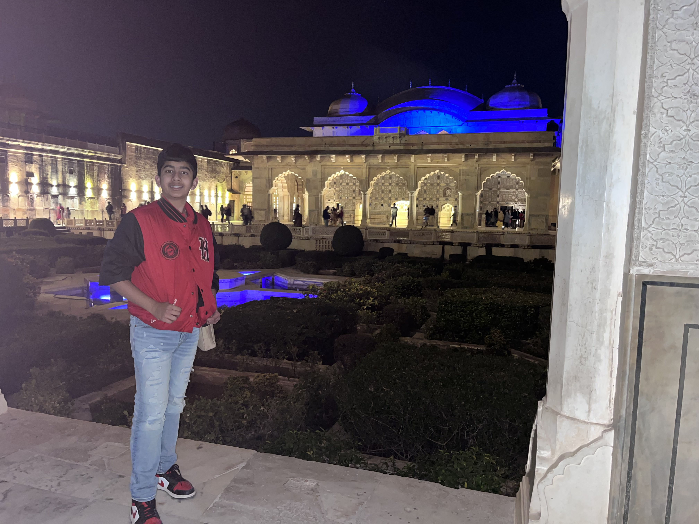
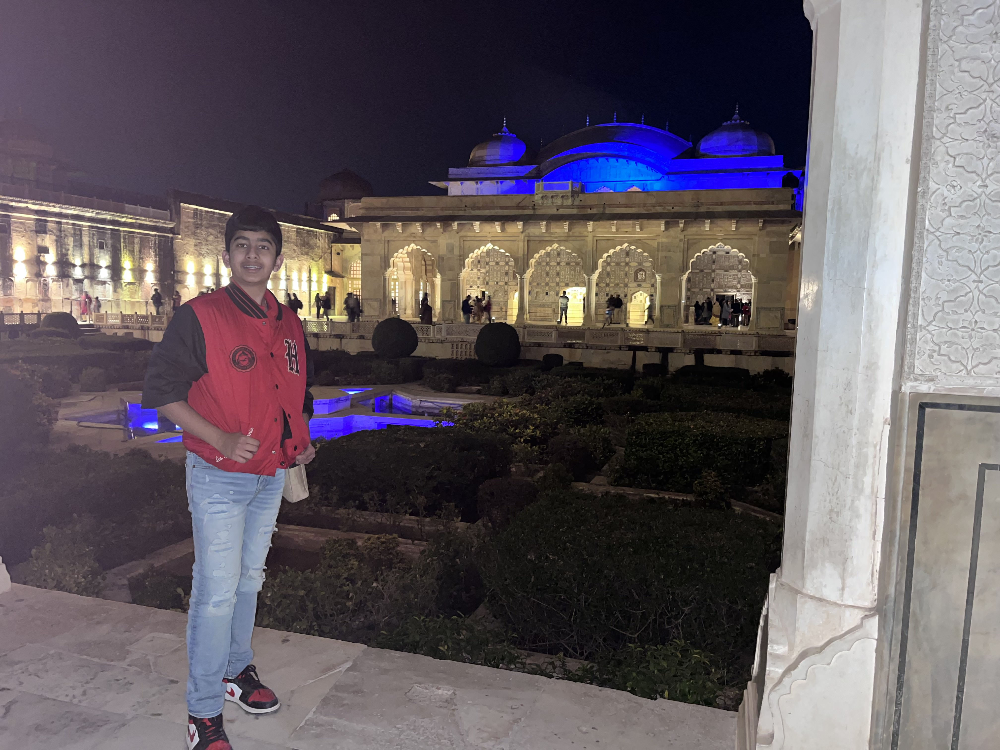
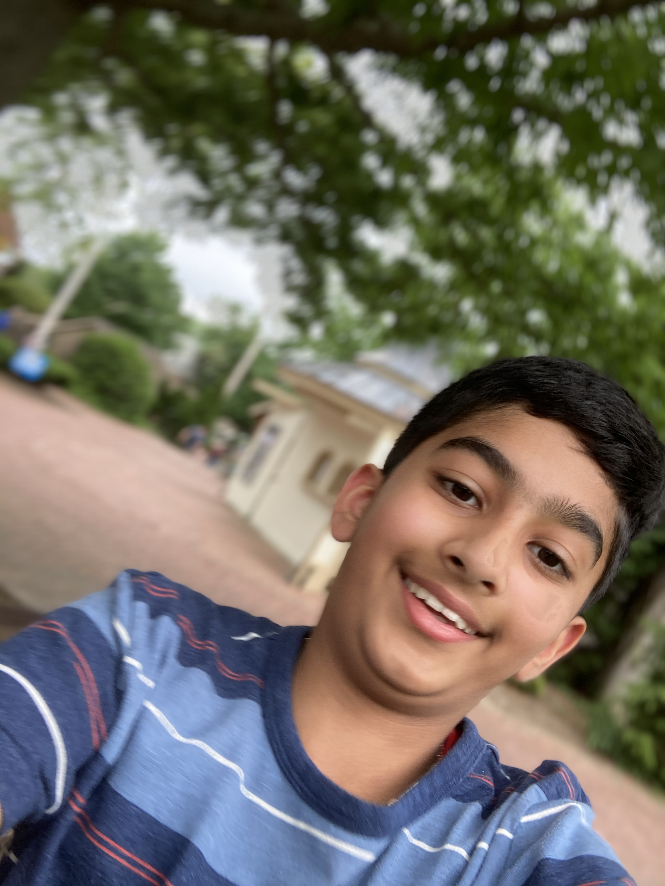
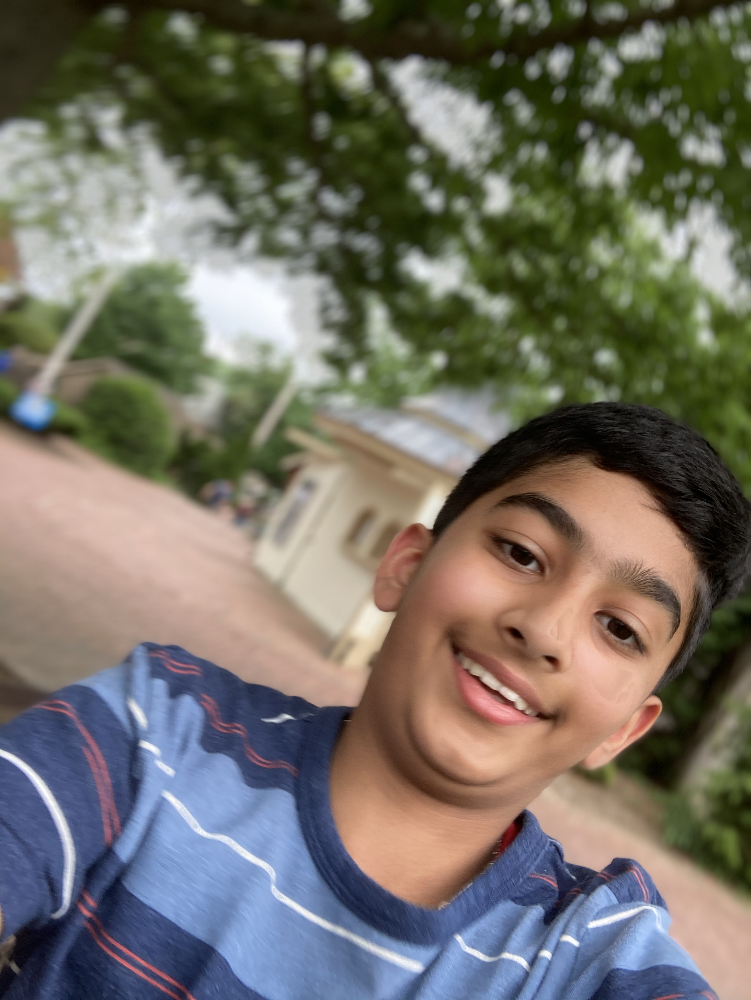
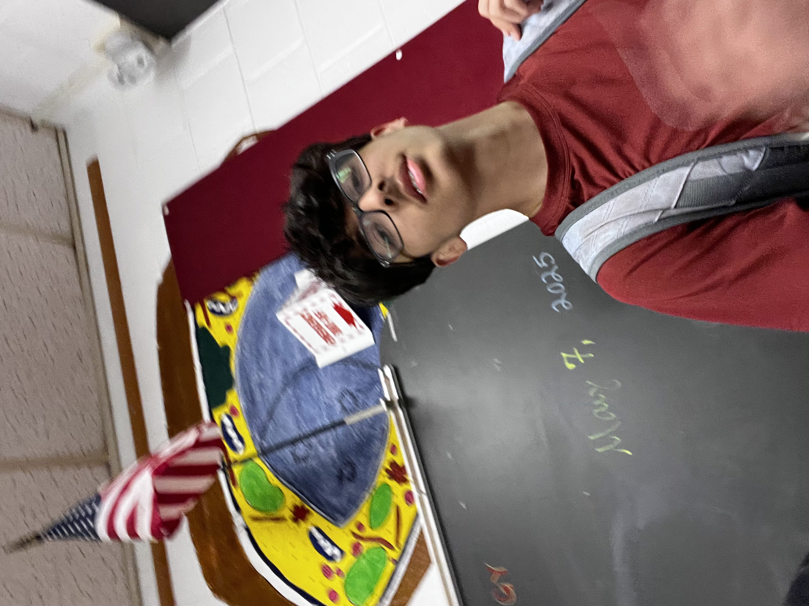
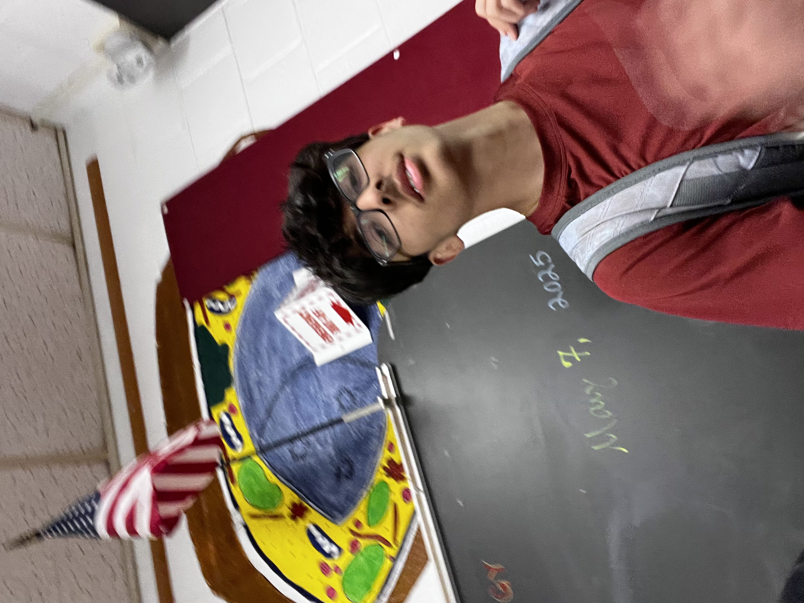

Introduction to us and the site

Welcome to my weblog project! This website was built from scratch using HTML and CSS as a hands-on way to learn web development. The goal was to create a functional, visually organized page that reflects my interests while practicing coding skills. Through this project, I learned about structuring content with divs, styling with CSS, embedding images, and arranging text and media for readability. This weblog showcases different sections including my daily life, favorite things, and photos, demonstrating how a simple personal website can be both informative and engaging. It was a challenging but rewarding project, giving me insight into the planning, attention to detail, and problem-solving required in web development.
Favorite Things
- Favorite Movie: Batman Begins — I love how it dives into Bruce Wayne's journey from tragedy to heroism, the realistic approach to Gotham, and the dark tone that sets it apart from other superhero films. The storytelling and character development make it a movie I can watch over and over.
- Favorite Book: Lord of the Rings — This epic tale of adventure, friendship, and courage has always fascinated me. I enjoy the rich world-building, complex characters, and the way it balances moments of action with deep philosophical and moral themes.
- Favorite Food: Pasta Arrabiata — I enjoy the bold flavors of this spicy Italian dish, the perfect balance of garlic, chili, and tomato sauce. It’s comforting, quick to make, and always satisfying after a long day.
- Favorite Sport: Basketball — I love both playing and watching basketball. The fast pace, strategy, teamwork, and skill involved make it exciting, and I particularly admire players like LeBron James for their versatility and leadership on the court.
- Favorite Hobby: Learning Finance — Understanding stocks, investments, and market dynamics is something I enjoy deeply. I like exploring different strategies, reading about historical market trends, and applying concepts to simulated or personal portfolios to see how theory translates into practice.
Photos of Me
(Aaaaand a sneaky Dilshan pic 😈)
 

 

 
